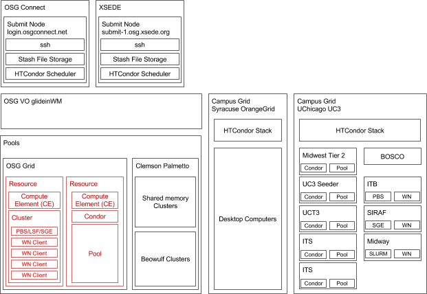

Welcome to RADICAL OSG page
We (RADICAL) are authorized to use two Submit Nodes managed by XSEDE and OSG Connect. Both Submit Nodes are part of the OSG virtual organization (VO) and they both submit to the same OSG Entry Point. Apparently, the Entry Point gives access to ~120 sites [1] whatever ‘site’ might mean in this context, but the command connect status of the CI Connect [25] distribution used by OSG connect indicates four resource pools: OSG Grid, Clemson Palmetto, Syracuse OrangeGrid, and UChicago UC3. These pools comprise diverse types of resources and middleware. Both XSEDE and OSG Connect Submit Nodes use GlideinWMS to submit pilots (i.e., Glidein Workers) to OSG Grid and maybe---but there are indications against it---Clemson Palmetto [15]. Probably but we are missing documentation, HTCondor is used to submit to Syracuse OrangeGrid and UChicago UC3 [15]
Different Grids
OSG Grid
This resource pool is, at the moment, undocumented and difficult to inspect resource-wise. By sshing into login.osgconnect.net and using the command connect status, and connect status -f | less. We know that the OSG Grid pool of OSG Connect has a variable number of ‘resources’ (in this context I think it means single core glideins) in the order of ~11K but we do not see on what type of resources these glideins have been instantiated. This is to be expected with OSG but incompatible with running experiments to see whether AIMES can do better resource selection than OSG on the base of specific workload requirements. These experiments would require bundle to know the properties/capabilities of the resources where these glideins have been instantiated.
Clemson Palmetto
This is Campus Grid with a total of 22328 cores from 9972 clusters of 20 different types with both shared and distributed memory [16]. OSG Connect “sees” 1360 resources ( probably single cores of compute nodes in this context) and as for OSG Grid, it is not documented/clear what type of cluster those resources belong to. [15] seems to imply that these resources are accessed from OSG Connect via glide-ins but connect status -f | less might indicate differently. While resources for OSG Grid are listed as, for example, glidein_2120656_61 or slot1_2@glidein_26 those on Palmetto are listed as, for example, 18084@node0020. Is this suggesting a direct interaction with Palmetto, maybe via a HTCondor software stack installed at Palmetto’s resources?
Syracuse OrangeGrid
This is a Campus Grid with a HTCondor software stack and a pool of workstations. They developed in house a HTCondor Virtual Machine Coordinator (CVMC) [19]. This VM is installed on different types of workstations/small clusters with diverse OSs (windows, linux) and hypervisors [24]. Condor schedules jobs on those VMs that run only when the workstations are idle. Accordingly, connect status -f | less indicates OrangeGrid resources as 3385@AS-ES-LAB-04- or 1829@LIB-LEBIRD1-3.
UChicago UC3
This is a Campus Grid [22, 23] composed of clusters and resource pools of diverse size and with diverse middleware. Bosco [21] is used to expose resources managed via PBS, SGE, and SLURM while Condor is used for other clusters/pools including something called “UC3 seeders” with, apparently, 544 job slots [23]. This is what UC3 is but, as usual, I did not manage to find documentation about what portion of UC3 is usable from OSG Connect and with what properties and capabilities.
Mark indicated [26] how to get the list of sites in the OSG VO via a ldap client (i.e. interrogating the GIP [8], the information system maintained by OSG):
ldapsearch -LLL -h is.grid.iu.edu -p 2170 -x -b 'o=grid' '(&(objectClass=GlueCE)(GlueCEAccessControlBaseRule=VO:osg))' GLIDEIN_ResourceName|grep -v dn:|cut -f2 -d=|cut -f1 -d,|sort|uniq
OSG-specific Terminology
Submit Node: A ‘machine’ where the user can log on via ssh. Equivalent to a HPC cluster head/front node. Also called: submit host/Point.
Entry Point: Generic term referring to the interface between the submit node and the (condor) pool or resources.
GlideinWMS: Set of services used to instantiate pilots (glide-ins) on Grid resources and condor pools in general.
HTCondor CE: Computing Element (CE)
HTConder SE: Storage Element (SE)
Condor: A batch system + scheduler used to assign condor jobs to condor resources. Equivalent to PBS/SGE/SLURM etc.
Worker Node (WN) Client: The service installed on every compute node/resource of a condor pool.
Architecture
CI Connect + HTCondor + GlideinWMS enables multiple configurations. Here we describe the one of XSEDE OSG and OSG Connect. Both XSEDE OSG and OSG Connect are Submit Nodes for the OSG Virtual Organization (VO). The OSG Connect architecture is sparsely and superficially documented. Red boxes indicate the generic architecture of (a portion of) OSG Grid as I do not know how to collect information about the resources composing the OSG Grid pool used by OSG Connect.
 Getting information about jobs and glideins
$ condor_q -pool osg-flock.grid.iu.edu -global -autoformat:,Vh \
globaljobid \
projectname \
remotehost \
QDate \
JobStartDate \
MATCH_EXP_JOB_GLIDEIN_Factory \
RequestCpus \
xsede_job \
RemoteSlotID
"login01.osgconnect.net#9021661.0#1430170451" , "Swift" , undefined , 1430170431, undefined , undefined , 1 , undefined, undefined
$ condor_status -pool osg-flock.grid.iu.edu -autoformat:,Vh \
GlobalJobId \
glidein_site \
glidein_resourcename \
machine glidein_ses \
state \
activity \
EnteredCurrentState \
GLIDEIN_ToDie \
hasfiletransfer \
HasMPI \
DetectedCpus \
DetectedMemory \
Cpus \
Memory \
TotalCpus \
TotalSlotCpus \
TotalSlots \
TotalMemory \
SlotType \
SlotWeight \
GLIDEIN_Factory \
GLIDEIN_MASTER_NAME \
DaemonStartTime \
EnteredCurrentActivity \
SlotID
undefined , "ISI_VM" , "ISI_VM" , "04940910-7ada-4bfb-b9fa-3e7d6dc2c32a.novalocal", undefined , "Unclaimed", "Idle" , 1445041394 , undefined , true , true , 8 , 15950 , 7 , 15822 , 8.0 , 8 , 2 , 15950 , "Partitionable", 7 , undefined , undefined , 1445041115 , 1445041394 , 1
Authors and Contributors
You can @mention a GitHub username to generate a link to their profile. The resulting <a> element will link to the contributor’s GitHub Profile. For example: In 2007, Chris Wanstrath (@defunkt), PJ Hyett (@pjhyett), and Tom Preston-Werner (@mojombo) founded GitHub.
Support or Contact
Having trouble with Pages? Check out our documentation or contact support and we’ll help you sort it out.